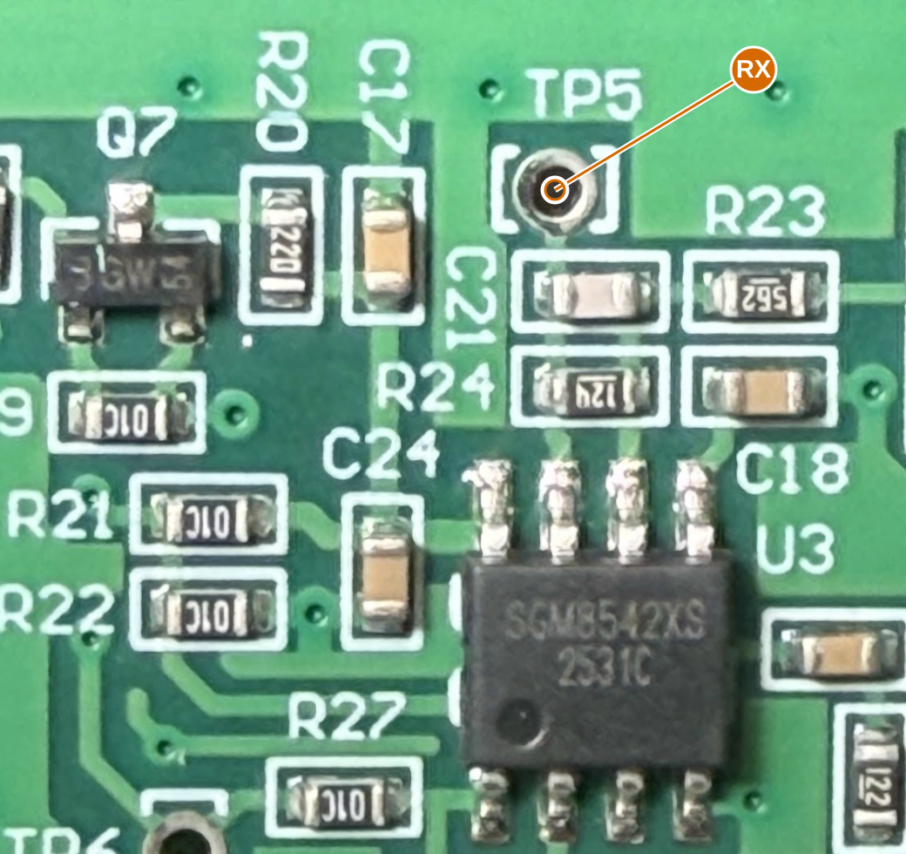

Receiver supply: TP5 above U3

- RX: TP5 plated hole, above U3 and beside C17. Red probe here; this is the receiver supply H_RX_VDD.
| ID | Red probe | Black probe | Condition | Reading |
|---|---|---|---|---|
| B62 | RX | G | Powered, same red-blinking state; PIR connected |
v0.9.39 · 1 requested readings
Connect the original battery, keep PIR connected and programmer disconnected. Use DC VOLTS with leads in COM and V/ohms. Keep the same red-blinking state and avoid bridging nearby pads.
B62: red RX (TP5 above U3), black G (printed GND test hole). Report volts and whether steady or varying. No other supply or continuity readings need repeating.

| ID | Red probe | Black probe | Condition | Reading |
|---|---|---|---|---|
| B62 | RX | G | Powered, same red-blinking state; PIR connected |

Other probe location for the same reading above; no additional test.
TP14 is now OUTA, established by 1.5 ohm to U5 pin8. The remaining 0 V at VREF is a separate question: TP5 powers U3 and feeds the R21/R22 bias network. A low TP5 reading could explain absent bias; a nonzero TP5 reading directs the next check to the bias path. A multimeter reading alone cannot resolve brief pulses or establish a failed part.
Worksheet only; nothing is sent automatically. Copy before closing.
ERC: 1 retained U6/U6A output conflict. U6A is DNP; its regulator symbol remains by your request. Other source and library findings are resolved.